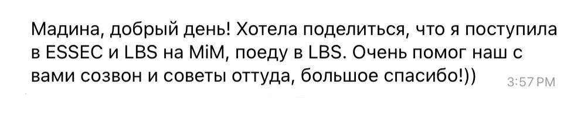
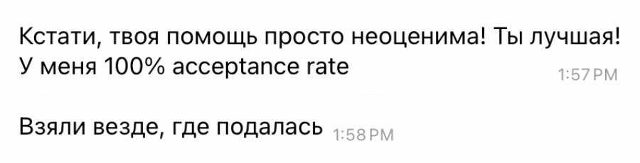
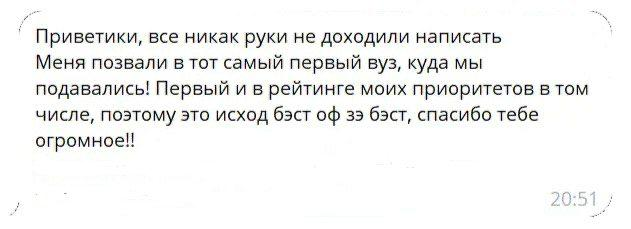
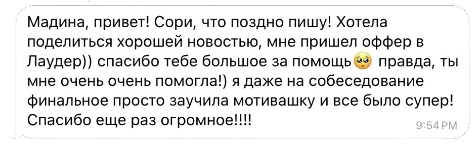

Madina Mameshova
Whatever the project, I end up doing the same thing: helping people find and question the evidence behind a decision, then leaving the decision to them. В самых разных проектах я делаю одно и то же: помогаю найти и перепроверить факты, на которых строится решение, а сам выбор оставляю за вами.
I studied in the US and built my career across the US, Russia and Kazakhstan, so I'm used to looking at a problem from more than one country at once. Я училась в США, а карьеру строила в Штатах, России и Казахстане, поэтому смотрю на задачу целиком.
Almaty, Kazakhstan · working in English and Russian Алматы, Казахстан · работаю на английском и русском языках
Ways to work with me Варианты работы со мной
01 Strategy, research and advising Стратегия, исследования и консалтинг
What I doЧто я делаю
- Growth strategy, market sizing, unit economics, financial models.Стратегия роста, оценка объема рынка, юнит-экономика, финансовые модели.
- Research turned into a clear action plan.Рыночные исследования с четкими рекомендациями.
- Advising a team on how to scope, sequence and run delivery.Помогаю командам определить рамки проекта, расставить приоритеты и выстроить процессы.
BackgroundОпыт
- Strategy consulting at Deloitte: growth strategy, market sizing, unit economics and financial models, credit-rating preparation, and research studies (market & sector studies, CFO surveys).Стратегический консалтинг в Deloitte: стратегия роста, оценка объема рынка, юнит-экономика и финансовые модели, подготовка к кредитным рейтингам, исследования (обзоры рынков и отраслей, опросы финансовых директоров).
- Founder's associate, finance & IR at pre-seed stage companies: financial planning, investor materials and reporting, cross-functional delivery.Founder's associate, финансы и IR в компаниях ранних стадий: финансовое планирование, материалы и отчетность для инвесторов, кросс-функциональные задачи.
- Product at an AI startup (now): product management on a founding team.Продукт в AI-стартапе (сейчас): продакт-менеджмент в команде основателей.
02 University admissions advising Поступление в зарубежные вузы
European business schools offered me scholarships, but I chose the US, and I didn't know you could negotiate financial aid there. I paid for not knowing out of my own pocket, and I'm still paying. Now I help people catch that kind of expensive mistake before they make it, using my own experience and the tools from my postgraduate diploma in coaching.Европейские бизнес-школы предлагали мне стипендии, но я выбрала учебу в США. Тогда я не знала, что о финансовой помощи можно и нужно договариваться с университетами, и расплачиваюсь за это незнание до сих пор. Теперь я помогаю другим вовремя замечать и избегать таких дорогостоящих ошибок. В этой работе я опираюсь на личный опыт и коучинговые инструменты из проф. переподготовки.
Who it's forКому подходит
- Working professionals: a master's or MBA as a step toward relocation and career growth, when you have ideas but aren't sure they're realistic.Специалисты с опытом – магистратура или MBA как шаг к релокации и карьерному росту, когда идеи уже есть и нужно оценить их реалистичность.
- High-school graduates and their parents: study abroad as a long game, with exams, deadlines, activities and portfolio laid out on a 1-3 year roadmap.Выпускники школ и их родители – учеба за рубежом как долгосрочная стратегия: подготовка к экзаменам, дедлайны, внеучебные проекты и портфолио на 1–3 года вперед.
What we'll doКак устроена работа
- Map your situation: background, goals, timeline, budget.Разбираем вашу ситуацию – бэкграунд, цели, сроки, бюджет.
- Build a strategy: countries, university tiers and program formats that fit your goals.Строим стратегию – страны, уровни вузов и форматы программ под ваши цели.
- Prepare the portfolio and applications: resume, essays, motivation and recommendation letters, deadlines.Готовим портфолио и заявки – резюме, эссе, мотивационные и рекомендательные письма, дедлайны.
- Compare offers on program content, costs and visa logistics, pick one, and plan next steps.Выбираем оффер, сравнивая учебные планы, финансовые и визовые условия – и планируем следующие шаги.
Formats & pricesФорматы и цены
| Intro callЗнакомство / установочная сессия | 20–30′ | FreeБесплатно |
| One session: consultation, portfolio or CV review, mock interview, or offer evaluationРазовая сессия: консультация, разбор портфолио или CV, тренировочное собеседование или оценка офферов | 60′ | 8 000–10 000 ₽ · $120–150 |
| Program shortlist: up to 10 programs, or an extended version with grants, funding and living costsПодбор программ: до 10 вузов или расширенный вариант с грантами, бюджетом и стоимостью жизни | 90–120′ | 25 000 / 40 000 ₽ · $300 / $500 |
| Admissions roadmap for high-school students, 1-3 years ahead (follow-up sessions 8 000 ₽)План подготовки к поступлению для школьников на 1–3 года вперед (контрольные сессии – 8 000 ₽) | 90′ | 25 000 ₽ · $300 |
The price includes all my work. The time shown is how long we meet; the preparation behind it (building a program shortlist, for example) takes me several more hours and isn't billed separately. If you're aiming at one specific program, I can put together an individual package.В цену входит вся моя работа. Указана длительность нашей встречи, а подготовка (например, подборка программ) занимает у меня еще несколько часов – отдельно за нее платить не нужно. Если вы нацелены на одну конкретную программу, можно собрать индивидуальное сопровождение под нее.
Selected resultsНекоторые результаты
Отзыв →

Отзыв →

Отзыв →

Отзыв →

03 Figuring out an early-career move Куда двигаться на старте карьеры
My field is economics, finance, business and consulting. That's where I'm most useful, including if you're switching in from somewhere else.Я специализируюсь на экономике, финансах, бизнесе и консалтинге. В этих сферах я могу помочь эффективнее всего – в том числе если вы переходите туда из другой индустрии.
What we'd doЧто мы сделаем
- Work out which direction fits when several look plausible.Разберемся, какое направление выбрать, если вариантов несколько и все кажутся перспективными.
- Turn "I should do something" into a concrete next move.Превратим абстрактное «надо что-то делать» в конкретный шаг.
- Tell your story and experience honestly, on your CV and beyond it.Честно сформулируем вашу историю и опыт – в резюме и за его пределами.
- Prepare for behavioral interviews so you get through company hiring rounds.Подготовимся к поведенческим (behavioral) интервью, чтобы уверенно проходить отбор в компании.
Formats & pricesФорматы и цены
| Intro callЗнакомство / установочная сессия | 20–30′ | FreeБесплатно |
| One session: career strategy, or a mock interview with feedbackРазовая сессия: карьерная стратегия или тренировочное интервью с разбором | 60′ | 8 000 ₽ · $120 |
| CV & LinkedIn: a quick audit (diagnosis only), or a full review with editsCV и LinkedIn: экспресс-аудит без правок или полный разбор с правками | 45′ / 90′ + async | 3 000 / 15 000 ₽ · $45 / $220 |
The price includes all my work. The time shown is how long we meet; preparation on my side takes extra time and isn't billed separately.В цену входит вся моя работа. Указана длительность нашей встречи, а подготовка с моей стороны занимает дополнительное время – отдельно за нее платить не нужно.
Book an intro callЗаписаться на стартовую консультацию04 Teaching, research and writing Преподавание, исследования и тексты
TeachingПреподавание
- University: five years teaching Development Economics to undergraduates and supervising their first research projects. Before that, an applied Audit & Management Accounting course (ACCA-aligned); I co-wrote its study guide.Университет – пять лет преподаю экономику развития студентам бакалавриата и руковожу их первыми исследовательскими работами. Ранее – прикладной курс по аудиту и управленческому учету (по стандартам ACCA), для которого была соавтором методички.
- School: at Moscow School 1567, year- and semester-long CLIL courses in Mathematics and Statistics for ESL students: curriculum design and materials from scratch.Школа – в московской школе 1567 годовые и семестровые CLIL-курсы по математике и статистике для учеников на английском: программа и материалы с нуля.
ResearchИсследования
My interests sit where economics, AI and education meet:Мои интересы лежат на стыке экономики, AI и образования:
- How AI adoption is changing labour markets, especially junior and entry-level work.Как внедрение AI меняет рынки труда – особенно стартовые позиции и работу начинающих специалистов.
- Development economics as a wider field.Экономика развития как широкое научное направление.
- How higher education is changing right now.Как прямо сейчас меняется высшее образование.
- How AI deployment lands in the countries on the receiving end of it.Как технологии AI приходят в страны на принимающей стороне – к пользователям и государствам, которые сами не создают эти системы.
I look at all of this as a practitioner, from work in the US, Russia and Kazakhstan.Я смотрю на эти процессы изнутри, как практик, опираясь на опыт в США, России и Казахстане.
WritingТексты
Clear pieces that turn scattered evidence into something you can act on.Ясные тексты, после которых из разрозненных данных видно, что делать.
Get in touchСвязаться со мнойAbout me Обо мне
In each of them I build structure where there isn't any and get evidence to the people making the decisions. Right now that means product at an early-stage AI company.Во всем этом я создаю структуру там, где ее нет, и довожу данные до тех, кто принимает решения. Сейчас я отвечаю за продукт в AI-стартапе на ранней стадии.
CareerКарьера
- 2025 – presentнаст. вр.Alobro, Co-founder & Product LeadFull-time since Feb 2026 · AI product-management platform · San Francisco / RemoteAlobro – сооснователь и Product LeadFull-time с февраля 2026 · AI-платформа для продакт-менеджмента · Сан-Франциско / удаленно
- 2016 – presentнаст. вр.HSE University, Teaching, academic mentoring & thesis committee memberTerm-paper advisor (since 2016)
Undergraduate mentoring (since 2019)
Bachelor's Thesis Defense Committee (since 2021)
Taught Audit & Accounting (2016-17) and Development Economics (2021-25)НИУ ВШЭ – преподавание, академическое менторство и член ГЭКРуководство курсовыми работами студентов (с 2016)
Менторство студентов (с 2019)
Член ГЭК по защите ВКР (с 2021)
Преподавание – аудит и учет (2016–17), Экономика развития (2021–25) - 2024 – 2026ivideon / Areonic, Founder's Associate & Strategic Projects ManagerCloud video-surveillance & analytics scale-up · US / CIS / GCCivideon / Areonic – Founder's Associate, руководитель стратегических проектовСкейлап в облачном видеонаблюдении и аналитике · США / СНГ / Ближний Восток
- 2024 – 2026Sapar Sports, Finance & Investor Relations AdvisorSeed-stage sports-tech startup · Orange County, CA / RemoteSapar Sports – советник по финансам и связям с инвесторами (IR)Спортивный стартап, seed stage · Orange County, CA / удаленно
- 2021 – 2024Deloitte, Consultant → Senior Consultant → Assistant ManagerStrategy, IR & Corporate Governance · Almaty / MoscowDeloitte – консультант → старший консультант → младший менеджерСтратегия, IR и корпоративное управление · Алматы / Москва
- 2020 – 2021HSE University, Head of Student & Academic Support OfficeInstitute of Education · 6 master's programs, 500+ studentsНИУ ВШЭ – руководитель учебного офисаИнститут образования · 6 программ магистратуры, 500+ студентов
- 2019 – 2020Deloitte, CIS Research Center LeadSector studies, macro analytics & thought leadershipDeloitte – руководитель Исследовательского центра в СНГОтраслевые исследования, макроаналитика и спецпроекты
- 2018 – 2019New York University, Assistant SEVIS Compliance AdvisorOffice of Global Services · international student supportNew York University – специалист по комплаенсуOffice of Global Services · поддержка международных студентов
- 2016 – 2017HSE University (ICEF), Dean of StudentsDual-degree undergraduate program with LSEНИУ ВШЭ (МИЭФ) – Dean of Students (куратор по работе со студентами бакалавриата)Программа двух дипломов бакалавриата с LSE
Education & credentialsОбразование и квалификация
- MA · Sociology & Education Policy, New York University (2017-2019)GPA 3.8/4.0 · Departmental Banner Bearer (academic excellence) · NRHH Chapter Award (residential-life leadership)Магистратура · социология и образовательная политика – New York University (2017–2019)GPA 3.8/4.0 · награды факультета и премия NRHH (за академические успехи и вклад в жизнь факультета и кампуса)
- BSc · Accounting & Finance / Economics, University of London & HSE University (2012-2016)Dual-degree program (ICEF / LSE direction) · Upper Second Class Honours · merit scholarship (60% tuition) · Dean's letter of recognitionБакалавриат · экономика и финансы / учет и финансы – НИУ ВШЭ и Лондонский университет (2012–2016)Программа двух дипломов МИЭФ (направление LSE) · диплом с отличием (Upper Second Class Honours) · академическая скидка 60% · почетная грамота за активное участие в жизни института
- Professional postgraduate diploma · Coaching & People Management, HSE University (2025)Диплом о профессиональной переподготовке · коучинг – НИУ ВШЭ (2025)
- Languages: Russian (native), English (fluent), German & Japanese (elementary)Языки – русский (родной), английский (в совершенстве), немецкий и японский (базовый)
Publications (co-authored)Публикации (соавтор)
-
Advertising Content Production Market StudyИсследование рынка производства рекламного контента
Deloitte, 2022: market sizing & growth outlook for Russia's creative-content production.Deloitte, 2022 – оценка объема и перспектив роста рынка креативного контента в России.
-
Contemporary Art Market StudyИсследование рынка современного искусства
Deloitte, 2022: analysis of Russia's contemporary-art sector for a state creative-industries program.Deloitte, 2022 – анализ сектора современного искусства для государственной программы развития креативных индустрий.
-
Women-CEO in Russia: Financial Performance IndicatorsЖенщины-руководители в России: финансовые показатели компаний
Deloitte, 2020: study of 224,100 firms; press: Kommersant.Deloitte, 2020 – исследование на базе данных 224 100 фирм; публикации в СМИ: «Коммерсантъ».
-
Trends in Robotic Process Automation in RussiaТенденции роботизации процессов (RPA) в России
Deloitte, 2020: RPA adoption, obstacles and expectations by sector.Deloitte, 2020 – внедрение RPA, барьеры и ожидания по отраслям.
-
CFO Survey, 1H 2020Опрос финансовых директоров (CFO Survey), I полугодие 2020
Deloitte, 2020: CFO sentiment across Russian markets.Deloitte, 2020 – настроения финансовых директоров на российском рынке.
Get in touch Как связаться
Whatever brought you here, one of these or something else entirely, just write to me. I read everything myself. Какая бы задача вас ни привела – любой из этих пунктов или совсем другой вопрос – просто напишите мне. Я читаю все сообщения сама.